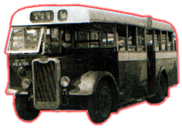

Guy
- Arab Mk
IV
 |
引擎 Engine 容積 Engine Capacity 波箱 Gearbox 車身 Body Build
體積 Volume 載客量 Passenger 服役年份 Year |
: Gardner 5LW : 不詳 : Wilson-type Pre-selective with Fluid-flywheel : CMB Metal Sections Longwell-green : 7620L X 2286W X 2997H (mm) : L30 S18 : 1954 - 1977 |
中巴長期支持者 Guy [佳牌]，從歷史當中，幾乎在全港島都能找到佳牌的影子，可見當時中記對此廠是多的重視。Arab Mk IV [亞拉伯四型] 共購入了 107 部 (之後陸續有其他型號出場)，它採用了三款不同車身，首批 10 部 CMB 自行設計及組裝，第二批及最後一批，都選用了 Metal Sections 公司供應的金屬車身組件，並由香港自行組合，中間夾著兩部由 Longwell Green 的客車版本，還裝有高背座椅，可惜不中用，最後亦被貶為普通巴士 ; 全部巴士座椅都有厚厚的座墊 (當期時成為了中巴的規格)。